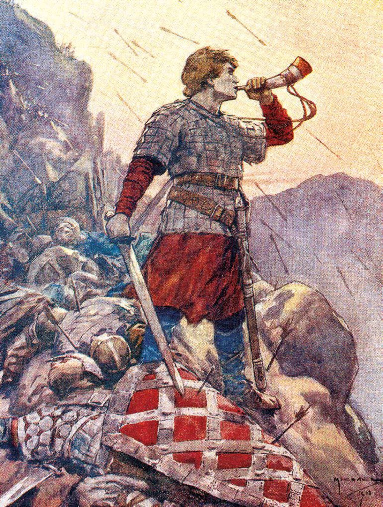
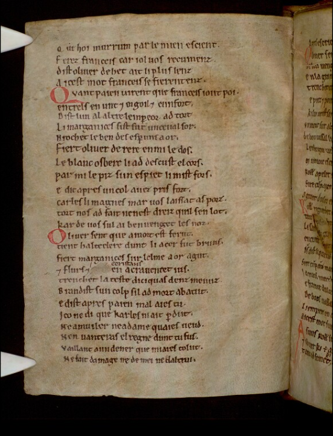
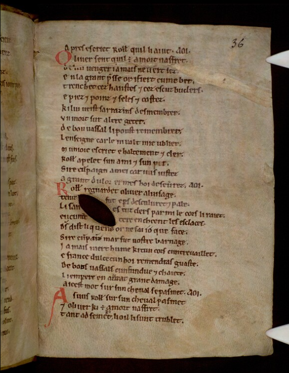
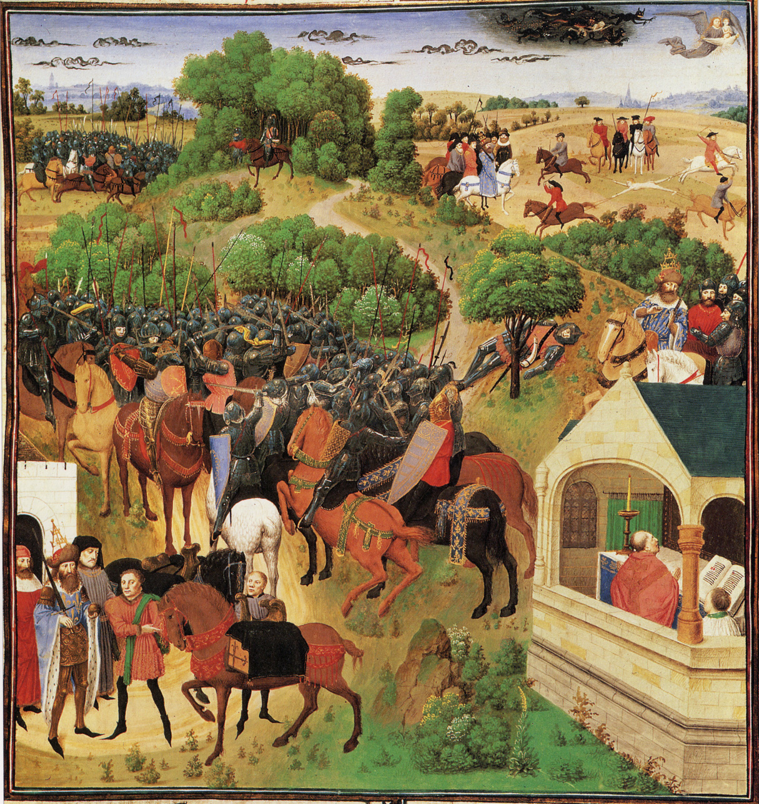
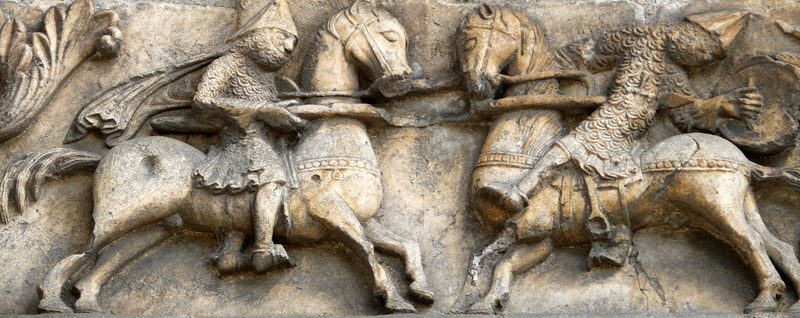

Introduction
La Chanson de Roland est la plus ancienne chanson de geste conservée en langue romane. Composée vraisemblablement à la fin du XIe siècle ou au début du XIIe siècle, elle relate la mort du neveu de Charlemagne, Roland, lors de la bataille de Roncevaux (778).
Le manuscrit Digby 23, conservé à la Bodleian Library d'Oxford, constitue le témoin le plus ancien et le plus complet de l'œuvre. Rédigé en anglo-normand dans le deuxième quart du XIIe siècle, il a fait l'objet de nombreuses éditions critiques depuis le XIXe siècle.
Cette édition numérique présente les laisses 146 et 147, au cœur de l'agonie de Roland, en regard de la version correspondante (laisse 211) du manuscrit de Châteauroux, témoin du XIIIe siècle présentant d'importantes variantes.
Origine historique
La chanson de Rolan se déroule au cours d'un évènement historique : la bataille de Ronceveaux du 15 août 778. Au retour de Saragosse en Espagne, l'armée dirigée par Charlemagne attaque la ville navarraise de Pampelune. Les Vascons (Basques) l'attaquent, en représailles,lors de son retour vers la France, à Ronceveaux. L'arrière-garde, composée d'un certains nombre de nobles, dont Roland, décrit alors comme préfet de la marche de Bretagne, est complètement détruite.Les faits sont racontés dans la Vita Karolina Magni (vers 830) d'Eginhard.
La légende

Roland est le neveu de Charlemagne. les douze pairs et les autres personnages sont : Olivier, l'archevêque Turpin, le traître Ganelon, le roi des Sarrasins Marsile, etc.
Le roi Charlemagne et son armée de Francs combattent en Espagne depuis plusieurs années et Saragosse, tenue par le roi Marsile, lui résiste. Sur le conseil de Roland et Turpin, il envoie Ganelon, le beau-père de Roland, en émissaire pour négocier la paix avec le roi sarrasin. Ce dernier profite de son entrevue avec Marsile pour comploter contre le roi franc et son armée. Roland fait partie de l'arrière-garde lors de la traversée des Pyrénées (sur le conseil de Ganelon), arrière-garde qui se fait complètement détruire par l'armée de Sarrasins levée par Marsile. C'est la partie proprement héroïque du récit. Charlemagne finit par retourner en arrière et écraser les Sarrasins; la trahison de Ganelon est découverte, il est jugé et mis à mort.
La version première de La Chanson de Roland, celle d'Oxford, est datée de ca 1098, dans le contexte de la première croisade
La tradition manuscrite
La Chanson de Roland nous est parvenue en quatre manuscrits complets, répartis en trois versions :
- la version d'Oxford : Oxford,Bodleian Library,Digby 23 (O). Deuxième quart du XIIe siècle, anglo-normand.4 002 vers décasyllabiques; 291 laisses assonancéees. Version la plus ancienne,version canonique
- la version de Venise 4 : Venezia,Biblioteca Nazionale Marciana, Fr. Z. 4 (V4). XIIIe siècle. Rédigée en franco-italien. 6 011 vers décasyllabiques; 419 laisses monorimes.
- la version de Châteauroux-Venise 7. Deux manuscrits : 1.Venezia , Biblioteca Nazionale Marciana, Fr. Z. 7 (V7). Milieu du XIIIe siècle. 8 395 vers décasullabiques, 445 laisses monorimes 2.Châteauroux, Médiathèque, 1, (C). Fin du XIIIe siecle. 8 201 vers décasyllabiques; 449 laisses monorimes.
Trois autres manuscrits incomplets : Paris, BnF, français 860 (version de Paris, F/P; francien et traits lorains, seconde moitié du XIIIe siècle); Cambridge, Trinity College Library, R. 3. 32 (version de Cambridge, T; ouest, fin XVe siècle); Lyon, Bibliothèque municipale, 743 (version de Lyon, L; bourg., XIVe siècle).
Trois fragments
L'incipit de la version d'Oxford
Le texte du MS. Digby 23 s'ouvre sur les vers suivants (fol. 1r), qui situent immédiatement l'action dans le contexte de la conquête carolingienne de l'Espagne :
1Carles li reis, nostre emperere magnes,
2Set anz tuz pleins ad estet en Espaigne,
3Tresqu'en la mer cunquist la tere altaigne.
4N'i ad castel ki devant lui remaigne;
5Mur ne citet n'i est remés a fraindre,
6Fors Sarraguce, ki est en une muntaigne.
7Li reis Marsilie la tient, ki Deu nen aimet;
8Mahumet sert e Apollin recleimet :
9Nes poet guarder que mals ne l'i ateignet.AOI.
Traduction
1Charles le roi, notre grand empereur,
2Sept ans tout pleins est resté en Espagne,
3Jusqu'à la mer il a conquis la terre haute.
4Il n'est château qui devant lui résiste,
5Mur ni cité ne reste à prendre,
6Sauf Saragosse, qui est sur une montagne.
7Le roi Marsile la tient, qui n'aime pas Dieu,
8Il sert Mahomet et invoque Apollin :
9Il ne peut s'en garder, le mal l'y atteindra.
Le manuscrit source
Identification
- Institution
- Bodleian Libraries, University of Oxford
- Cote
- MS. Digby 23 (SC : 1624)
- Lieu
- Oxford, United Kingdom
Contenu
Manuscrit composite en deux parties, célèbre pour sa seconde partie qui contient la copie la plus ancienne connue de la Chanson de Roland. Rédigée en dialecte anglo-normand, cette copie fut probablement produite en Angleterre dans le deuxième quart du XIIe siècle, mais sa provenance médiévale demeure obscure. La première partie, contenant une traduction latine du Timée de Platon, appartint à l'abbaye d'Oseney à partir du XIIIe siècle ; que l'abbaye ait également possédé la chanson de geste est possible mais non établi.
Description physique
- Support
- Parchemin.
- Dimensions
- c. 170–175 × c. 120–125 mm
- Mise en page
- Réglure à la pointe sèche (drypoint). Une colonne, 27 à 30 lignes. Espace écrit : c. 130–145 × 75–90 mm. Perforations dans les marges extérieures uniquement.
- Décoration
- Initiales en rouge (une fois en vert, fol. 39r) au début de chaque laisse, avec une décoration sporadique et sobre.


Transcription — MS. Digby 23
↔ Comparer avec la version du MS. de Châteauroux (laisse 211)
Laisse 146
17 Oliver sent que a mort est ferut
18 Tient Halteclere dunt li acer fut bruns,
19 Fiert Marganices sur l'elme a or agut,
20 E flurs e cristaus en acraventet jus.
21 Trenchet la teste d'ici qu'as denz menuz,
22 brandist sun colp, si l'ad mort abatut,
23 E dist aprés : "paien, mal aies tu !
24 Iço ne di que Karles n'i ait perdut :
25 Ne a muiler ne a dame qu'aies veüd
26 N'en vanteras el regne dunt tu fus
27 Vaillant a un dener que m'i aies tolut,
28 ne fait damage ne de mei ne d'altrui."
Laisse 147
1 Aprés escrüet Rolland qu'il li ajut. AOI.
2 Oliver sent qu'il est a mort nasfrét,
3 De lui venger ja mais ne li ert sez.
4 En la grant presse or i fiert cume ber,
5 Trenchet ces hanstes et cez escuz buclers
6 E piez e poinz e seles e costez.
7 Ki lui veïst Sarrazins desmembrer,
8 Un mort sur altre geter,
9 De bon vassal li poüst remembrer.
10 L'enseigne Carle n'i volt mie ublier :
11 "Munjoie !" escrïet e haltement et cler;
12 Rolland apelet, sun ami e sun per :
13 "Sire cumpaign, a mei car vus justez !ï
14 A grant dulor ermes hoi desevrez." AOI.

Huit moments de la Chanson de Roland (miniature), Turold, XIe siècle.
Traduction en français moderne
Traduction des deux laisses par Pierre Jonin, dans La chanson de Roland, paris, Folio Classiques, 1979, p.213-215
146 Olivier sent qu'il est frappé à mort mais il tient hauteclaire à l'acier bruni et il en frappe Marganice sur son casque pointu et décoré, dont il jette à terre fleurs et pierrreries. Puis il lui fend le crâne jusqu'aux dents de devant et en secouant sa lame, il l'abat raide mort. "Maudit sois-tu païen !" lui cire-t-il ensuite. "Je ne prétends pas que Charles n'ait pas perdu des siens. Toi, du moins, tu ne te vanteras pas devant une femme ou une dame de ton royaume de m'avoir pris la valeur d'un denier, ni d'avoir fait du mal à moi ou à d'autres." Puis il crie à Roland de venir l'aider.
147 Olivier sent qu'il est blessé à mort mais jamais sa soif de vengeance ne sera assouvie. Maintenant au plus fort de la mêlée il frappe en vrai chevalier. Il met en pièce lances et boucliers, pieds et poings, selles et échines. Qui l'aurait vu amputer les Sarrasins, jeter cadavre sur cadavre, pourrait conserver le souvenir d'un rude guerrier. Mais il ne veut pas oublier le cri de guerre de Charles. Il lance "Monjoie" d'une voix haute et sonore puis il appelle Roland, son ami et son pair : "Seigneur, mon ami, serrez-vous donc tout contre moi ! Aujourd'hui nous allons terriblement souffrir d'être séparés."
